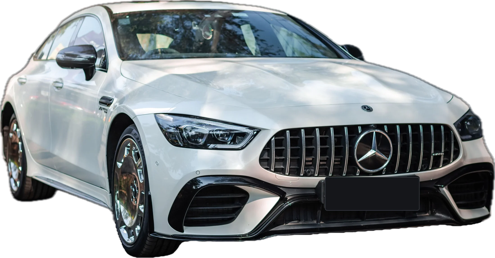
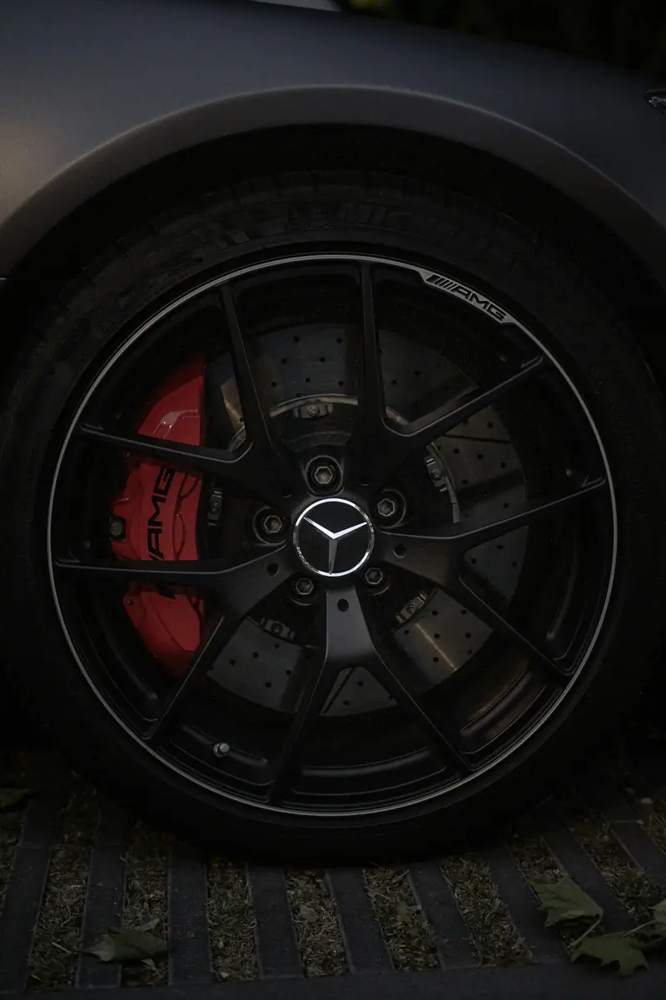

Group 01 / 02
Pads, Discs and Routine Brake Service
These services cover the parts that wear with everyday driving and need regular attention.
5 servicesA soft pedal on a hot afternoon. A squeal at every traffic light. A red warning in the cluster that wasn’t there yesterday. Your Mercedes brakes give early signs, and acting on them keeps a small repair from becoming a big one. We inspect every part of the system, then fix exactly what it needs.

Brakes rarely fail without warning. Here is what common symptoms usually point to.
Likely causePads near the end of their life or glazed pads
Book soonLikely causePads worn to the metal and cutting into the discs
Stop driving and call usLikely causeUneven disc wear or overheated discs
Book within daysLikely causeAir or moisture in the fluid, or a leak
Stop driving and call usLikely causeSticking caliper or uneven pad wear
Book within daysLikely causeLow fluid or a hose leak
Stop driving and call usLikely causeWheel speed sensor or module fault
Book soonLikely causeWear sensor triggered, pads need replacing
Book soonA worn pad left too long destroys the disc behind it. A small hose leak drains one of the two brake circuits. Each delay turns a simple job into a costly one, and it puts you at risk in Abu Dhabi traffic.
Even new Mercedes models need watching. In 2026, Mercedes expanded its S-Class recall for front brake hoses that can weep fluid under heat and stress. The original 2025 campaign covered 20,339 S-Class cars from 2021 to 2023, and a leak shows up as a red brake fluid warning. Earlier, 913 A-Class and CLA models worldwide were recalled because rear brake hoses could chafe and leak.
Brakes also decide whether your car passes its annual inspection. Worn brake pads are among the most common reasons cars fail in the UAE.
Recent Mercedes brake recalls
From a pad change to a full hydraulic overhaul, we handle every part of your Mercedes braking system.
These services cover the parts that wear with everyday driving and need regular attention.
5 servicesWe fit genuine or OE-quality pads matched to your model and driving style. New pads are bedded in correctly, so they reach full grip quickly and stay quiet.
Ask about thisWe measure disc thickness and runout against Mercedes limits. Discs are replaced only when they are below minimum thickness, warped or heat-damaged.
Ask about thisMercedes wear sensors trigger the “brake wear” message. We replace the sensor with every pad change when needed and reset the service display correctly.
Ask about thisWe flush the system with MB-approved DOT 4 Plus fluid. A moisture test first shows how much the old fluid has degraded in Abu Dhabi heat.
Ask about thisMercedes electronic parking brakes must be put into service mode before rear pads are changed. We do this with diagnostic software and repair faulty motors or switches.
Ask about this
These repairs restore the systems that control brake pressure, stability and high-performance stopping.
5 servicesA sticking caliper causes pulling, uneven wear and overheating. We free, rebuild or replace calipers and replace slide pins and seals as needed.
Ask about thisHeat hardens rubber hoses and can lead to leaks. We inspect every hose and line, replace damaged ones and bleed the system fully.
Ask about thisABS and ESP faults usually come from wheel speed sensors, wiring or the control module. We read the fault codes, test each sensor and repair the exact cause.
Ask about thisAMG composite and carbon-ceramic brakes need model-specific parts and careful handling. We measure wear correctly and fit the right AMG pads, discs and calipers.
Ask about thisElectric and hybrid Mercedes models use regenerative braking, so the discs see less use and can corrode. We clean, inspect and service them to keep braking smooth.
Ask about thisEach Mercedes brake system works differently and needs its own approach.
Brake fluid slowly absorbs moisture from the air, and moisture lowers its boiling point. Fresh DOT 4 fluid boils at about 230°C (446°F). With 3.7% water, that drops to just 155°C (311°F), low enough for hard braking to boil fluid in the calipers.
Abu Dhabi adds to the problem. Stop-start traffic, long highway descents from bridges and flyovers, and 45°C summers all push brake temperatures higher. Boiling fluid creates vapour bubbles, which feel like a soft, sinking pedal.
That’s why Mercedes uses its own DOT 4 Plus fluid under specification MB 331.0, with a higher wet boiling point and a standard change interval of every two years. In UAE conditions, keeping to that interval matters.
The right job depends on what the inspection finds. This is how we help you choose.
Pads and wear sensor only
WhyRestores grip at the lowest cost
Pads and discs together
WhyNew pads on bad discs wear fast and vibrate
Brake fluid change
WhyRestores a firm pedal and heat resistance
Caliper repair plus pads
WhyFixes the cause of uneven wear
Hose or line repair and full bleed
WhySeals the leak and restores both brake circuits
Simple habits that keep your brakes strong and quiet in Abu Dhabi traffic.
Fresh DOT 4 Plus fluid keeps a firm pedal in Abu Dhabi heat.
Gentle, early braking reduces heat and pad wear in city traffic.
Lower gears ease the load on brakes during long downhill stretches.
Replacing pads on time stops them from damaging the discs.
Correct pressure and tread help brakes stop the car in less distance.
Removing brake dust and sand protects calipers and disc surfaces.
Occasional firm braking keeps rarely used discs clean.
Five clear steps, the same on every job, so you always know what is happening and why.
We measure pads and discs and test the brake fluid for moisture. This shows exactly what needs replacing and what doesn’t.
We read ABS, ESP and parking brake fault codes with diagnostic software. Hidden electronic faults are found before any work starts.
You get a clear report and a line-by-line quote first. No work begins until you approve it, and we call before any extras.
We fit genuine or OE-quality parts and torque everything to Mercedes specs. Pads are bedded in and the brake system is fully bled.
We road test the car and reset the service display correctly. You get your car back with a short report of all work done.
MOIAT-certified, Mercedes-focused and rated 4.5 from 765 Google reviews. Here is what that means for your car.
Our team works on Mercedes braking systems every day. We know every setup, from standard floating calipers to AMG and carbon-ceramic brakes.
We measure your pads, discs and brake fluid before recommending any work. This means you only pay for the parts your car actually needs.
We test the moisture level of your old brake fluid first. Then we refill the system with MB-approved DOT 4 Plus fluid only.
We use Mercedes-compatible software to read every brake-related module. It lets us repair ABS and ESP faults and service the electronic parking brake correctly.
Your quote shows genuine and OE-quality part options side by side. You can see the price difference clearly and choose what suits you.
You receive a line-by-line quote before any work begins. If we find anything extra during the repair, we call you first.
It depends on the model and what needs replacing. A pad change costs far less than pads, discs and calipers together, and AMG or carbon-ceramic parts cost more again. We give you a fixed quote after inspection.
A pad change usually takes one to two hours. Pads and discs on both axles take about half a day. Caliper, hose or ABS repairs may take longer, depending on parts.
Not always. We measure the discs against Mercedes minimum thickness and check for warping. If they are within limits and smooth, only the pads need replacing.
Mercedes recommends every two years for its DOT 4 Plus fluid. In Abu Dhabi heat, sticking to this interval is important, as moisture in old fluid lowers its boiling point.
A yellow “brake wear” message means you should book soon. A red brake warning often means low fluid or a hydraulic fault. If the pedal feels soft or the red warning stays on, stop driving and call us.
Yes. We service AMG high-performance and carbon-ceramic brakes with model-specific parts and procedures, including correct wear measurement.
New pads need a short bedding-in period to settle against the discs. We bed them in before handover, but light noise in the first few drives can be normal. Persistent squealing should be checked.
 Transmission Repair7G, 9G-TRONIC and DCT gearbox repair and rebuilds.
Transmission Repair7G, 9G-TRONIC and DCT gearbox repair and rebuilds. Engine RepairTiming chains, head gaskets, leaks, turbos and AMG V8s.
Engine RepairTiming chains, head gaskets, leaks, turbos and AMG V8s. PaintingPaint-code matching, panel paint, resprays and ceramic coating.
PaintingPaint-code matching, panel paint, resprays and ceramic coating. Body ShopCollision, dent, bumper and aluminium repair with ADAS calibration.
Body ShopCollision, dent, bumper and aluminium repair with ADAS calibration. DiagnosticsXENTRY full-module scans, live data and warning lights.
DiagnosticsXENTRY full-module scans, live data and warning lights. Oil ChangeMB 229-approved oil, genuine filters and ASSYST reset.
Oil ChangeMB 229-approved oil, genuine filters and ASSYST reset. Electrical RepairBattery, SAM module, wiring, 48V and lighting faults.
Electrical RepairBattery, SAM module, wiring, 48V and lighting faults. AC RepairR1234yf regas, compressors, leaks and climate control.
AC RepairR1234yf regas, compressors, leaks and climate control.Brakes are the one system you can’t afford to delay. Book an inspection today and get a clear answer on what your Mercedes needs. Our Mercedes brake repair team in Abu Dhabi is ready to help.